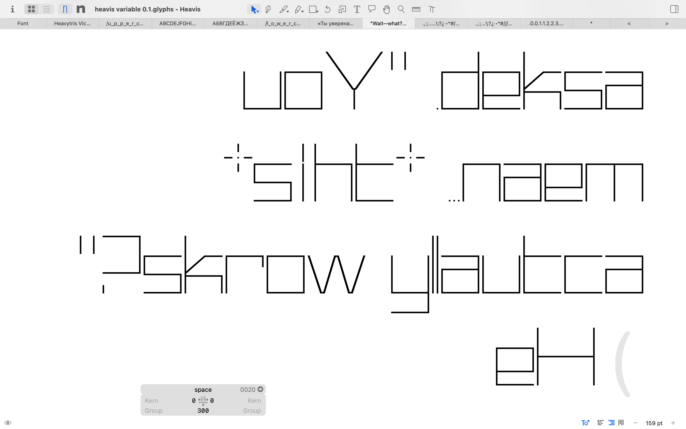
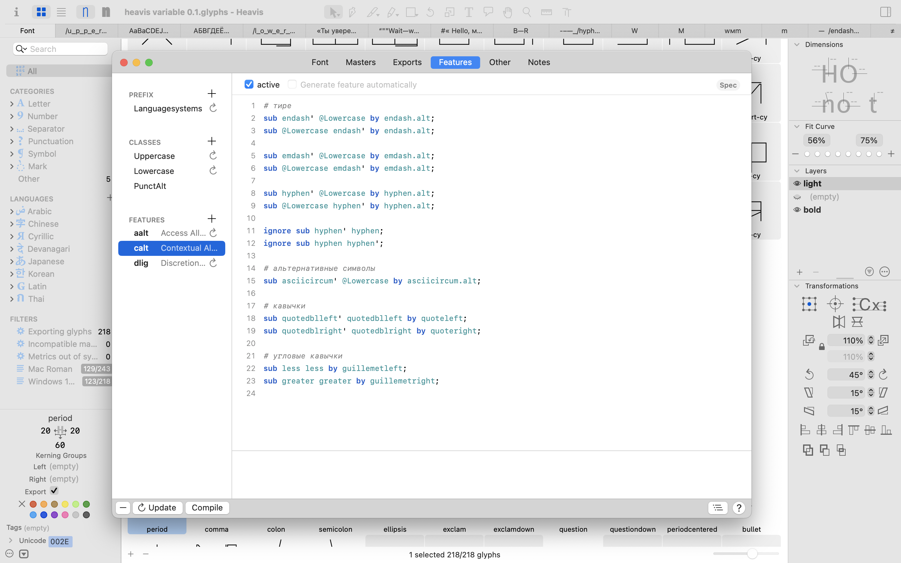

/ heavis 2.0
[ output ]
[ process-log ]
mission:
i wanted to create ‘heavis 2.0’ — the best version of the ‘heavis’ typeface.
younger, more beautiful, more perfect.
— two variable axes,
— contextual punctuation replacement for upper- and lower-case letters,
— an expanded character library,
— everything meticulously aligned to the grid so that you can play tetris with the letters,
— individual thickness settings for cyrillic characters

// download, share and distribute it however you like, and do give me some feedback. it's free.
if you like this typographical wonder (i can’t think of any other way to explain how I managed to set up contextual replacement), please throw in a bit of cash.
if you don’t like it, throw in a bit of cash anyway – you can just add a diss right away.

[ external-links ]